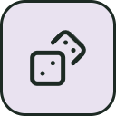

랜덤게임 모음집
술자리에서 하던 게임을 화면으로.
나와 NPC 콤이 3명이 원탁에 둘러앉아 게임을 진행합니다.
어떤 프로젝트인가요?
친구들과 빠르게 즐길 수 있는 술게임 사이트를 낙서 캐릭터와 원탁 시점으로 만들었습니다.
- 게임 목록에서 골라 바로 시작
- 리듬 게임과 말로 하는 게임을 같은 원탁에서 진행
- 설치 없이 브라우저에서 실행
게임 하기
소리가 나오는 게임이 있으니 소리를 켜고 시작하세요. 규칙은 아직 검수 중이라 바뀔 수 있습니다.
랜덤게임 열기 ↗